NeuroAssist
A lightweight AI assistant that segments brain tumors from MRI fast enough for interactive surgical planning.
The problem
Why it matters
Before removing a brain tumor, a neurosurgeon needs to know exactly where the tumor is, how big each part is, and how much healthy tissue lies near it. Outlining this by hand on four MRI scans takes a long time and varies between people.
What AI already does
Models such as nnU-Net and SwinUNETR segment BraTS tumors with excellent Dice scores. Accuracy is not the bottleneck any more.
The gap we attack
These models are large and slow: tens of millions of parameters and hundreds of GFLOPs per scan. That is hard to run on a hospital workstation or edge device, and too slow to re-run while a surgeon adjusts a plan.
Our question: how small and fast can we make the model while keeping accuracy close, and can we turn the result into a planning tool a surgeon could actually use?
Papers and tools we built on
| Work | What we took from it |
|---|---|
| nnU-Net, Isensee et al., Nature Methods 2021 | The recipe for a strong 3D U-Net: 5 levels, stride-2 downsampling, instance norm, leaky ReLU, residual blocks, Dice + cross-entropy. Our baseline follows it, using MONAI's DynUNet (nnU-Net-style, not the full self-configuring pipeline). |
| BraTS challenge, Menze et al. 2015; Bakas et al. 2017/2018 | The data, labels and the Dice-on-regions evaluation (whole tumor, tumor core, enhancing tumor). |
| Swin UNETR, Hatamizadeh et al., 2021 | The other state-of-the-art family that motivates our size and speed concern (transformer encoder, heavy). |
| Knowledge distillation, Hinton, Vinyals, Dean, 2015 | Train a small student to copy the soft predictions of a big teacher. |
| MONAI, Cardoso et al. 2022 | Medical-imaging building blocks: networks, losses, 3D augmentation. |
| Also used | Dice loss (Milletari et al., V-Net 2016), MC-dropout (Gal and Ghahramani 2016), depthwise-separable convolutions (MobileNets, Howard et al. 2017), Jensen-Shannon divergence (Lin 1991), Harvard-Oxford atlas. |
What we changed, and why
| Change | Baseline | NeuroAssist | Why |
|---|---|---|---|
| Width | 32-64-128-256-320 channels | 8-16-32-64-128 | A conv layer's weights scale with in x out channels, so 4x narrower gives about 16x fewer weights. |
| Blocks | Residual | Plain convs | Removes extra convolutions per block. |
| Training signal | Labels only | Labels + teacher's soft predictions | Hypothesis: a small model learns better from a teacher's soft output. Our ablations (logit-level and feature-level) did not confirm it (see Results). |
| Speed tricks | none | FP16, channels-last, ONNX, INT8 | Extra latency cuts with no new model design. |
| Output | A segmentation mask | Volumes, safety margins, trajectory check, 3D view, uncertainty map | A surgeon needs decision support, not only a mask. |
How it fits together
Training uses both networks. At run time only the small student is needed.
MRI inputs and labels
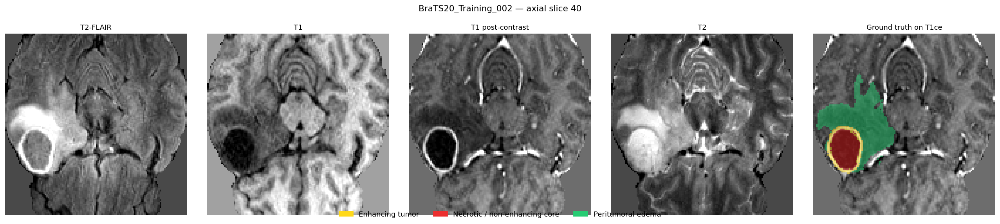
Size comparison
Bar length is the number of channels at each level of the U-Net.
The maths, in plain language
Dice loss: reward overlap
Dice is "twice the overlap divided by the total size of both masks". 1 means identical, 0 means no overlap.
Why: a tumor is only a few percent of the scan. Plain accuracy would be 97% by predicting "no tumor". Dice ignores the empty background and focuses on the tumor.
Cross-entropy: be confident and right
For every voxel it punishes the model when it gives a low probability to the true class.
Why: Dice gives noisy signals when a structure is tiny or absent in a patch. Cross-entropy is smooth and steady, so we add both.
Distillation: learn from a teacher's doubt
At a tumor border the teacher may say "60% edema, 30% core". A hard label only says "edema". The student copies the teacher's full opinion.
Why T: a higher temperature flattens the probabilities so small ones become visible (try the slider below). Why T²: softer targets shrink gradients by about 1/T², so T² keeps the distillation term balanced against the label loss.
In our experiments: no measurable gain over training from scratch, for either logit-level or feature-level distillation (see Results).
Safety margin: distance to the tumor
For every voxel, the distance to the nearest tumor-core voxel. Voxels within m millimetres form a shell around the tumor.
Why: it is exact in 3D and fast, and it gives surgeons 5, 10 and 15 mm shells to reason about. BraTS voxels are 1 mm, so voxel distance is millimetres.
HD95: how wrong are the edges?
Take every boundary point of the prediction and its distance to the true boundary (and vice versa). Report the 95th-percentile distance, in mm.
Why: the plain maximum is ruined by one stray voxel. The 95th percentile measures edge error robustly.
Uncertainty: where do two models disagree?
If the big and the small model give different probabilities for a voxel, a human should look there.
Why JS: it is symmetric and stays finite even when a probability is 0, unlike plain KL.
Flip test-time augmentation
Predict on the scan and its mirror images, un-mirror, and average.
Why: each flip makes slightly different mistakes, so averaging cancels some of them. It costs 8x the compute.
Making convs cheaper
Depthwise-separable convolution splits one big convolution into a per-channel one and a channel-mixing one. INT8 stores numbers in 8 bits: \(q=\mathrm{round}(x/s)+z\).
Why: far fewer multiplications. On GPUs 3D depthwise kernels can still be slow, so we benchmark instead of assuming.
Try it: what does the temperature T do?
Teacher logits for one border voxel: background 3.0, edema 1.5, tumor core 0.5.
T = 1
At T = 1 the teacher is nearly sure. At higher T the runner-up classes become visible: that is the "dark knowledge" the student learns.
Safety margin picture
Results: every run we did
All numbers are on the 74 held-out validation patients of our 80/20 patient-level split of BraTS 2020 training data (same seed and split in every run). HD95 is in millimetres. A dash (-) means not run or not recorded. Runs 2 to 5 reuse the lightweight architecture of Run 1 (except the depthwise-separable student), so its size and speed are the same. Dice for Runs 1, 2 and the feature-KD, depthwise and Run 5 students is the best validation checkpoint; the region-head row is the last epoch.
Run 1. Main run: baseline and lightweight student
Setup. The baseline (16.67 M parameters, residual blocks, 32 to 320 channels) trained for 50 epochs, about 65 minutes on a T4. The lightweight student (1.41 M parameters, 8 to 128 channels) then trained for 50 epochs with distillation from the baseline (soft-label KL with T = 2, weight 1, plus Dice and cross-entropy), about 50 minutes.
What we found. The baseline reaches 0.833 mean Dice. The student reaches 0.791, a drop of 0.042. In return it has 11.8x fewer parameters, 15x fewer FLOPs, runs 5.0x faster on GPU (FP16) and 5.7x faster on CPU (1.8 s versus 10.4 s per volume), and needs 3x less GPU memory. The cost is boundary accuracy: HD95 roughly doubles on enhancing tumor (4.1 to 8.7 mm) and tumor core (5.7 to 10.2 mm), while whole tumor changes less (6.1 to 8.9 mm). A repeat of the same training on another Kaggle session gave identical Dice (0.833 and 0.791) and speed-ups of 3.6x (GPU FP16) and 5.9x (CPU), so absolute timings vary a little between sessions.
Deployment extras. ONNX Runtime on CPU takes 1.36 s versus 1.84 s for PyTorch (1.27 s versus 1.66 s in the repeat session). The INT8 model file is 1.5 MB versus 5.4 MB for FP32. We did not record INT8 accuracy here, so we make no accuracy claim for it.
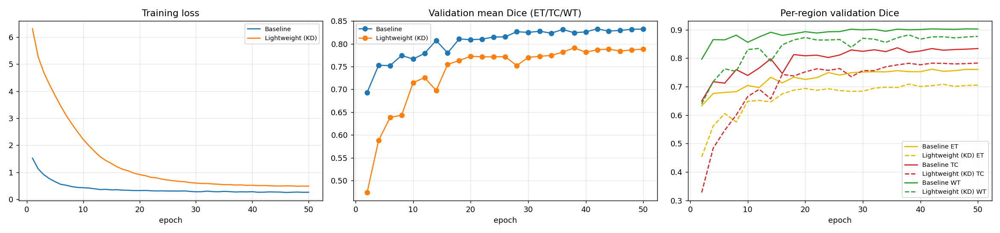
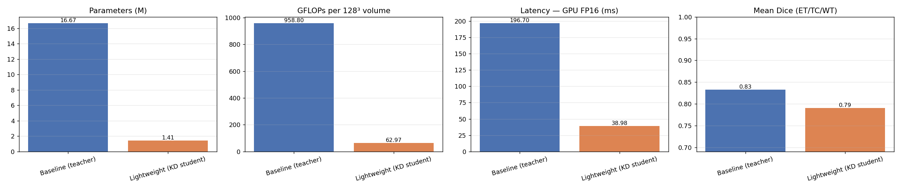
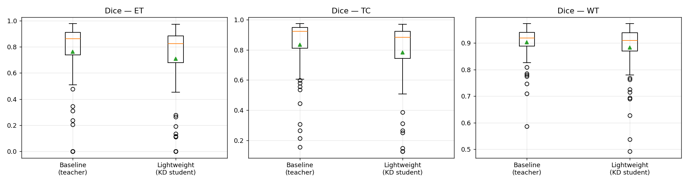
Run 2. Ablation: does distillation help?
Setup. Same data, split and settings. The baseline retrained to identical scores (0.833 mean Dice), so training is reproducible. We then trained the lightweight student twice: with distillation and without it (labels only).
What we found. With distillation 0.794 mean Dice, without 0.793 (ET 0.711 vs 0.721, TC 0.786 vs 0.780, WT 0.885 vs 0.878). The distilled student scored 0.791 in Run 1 and 0.794 in Run 2, so run-to-run noise is about 0.003 and the 0.001 difference is not meaningful. The curves cross: the student without distillation is ahead at epoch 2 (0.577 vs 0.473), the distilled one leads at epochs 10 and 20 (0.717 vs 0.654, 0.775 vs 0.766), and the one without leads again at epoch 30 (0.791 vs 0.775). Both end equal.
What we think it means. With 295 training cases and a 1.4 M-parameter student, the hard labels already carry the useful signal. Our teacher is only moderately accurate (0.833), so its soft labels add little. The student's capacity, not the training signal, limits accuracy. The size and speed gains therefore come from the smaller architecture. We only tried one temperature and one weight; Run 3 tests feature-level distillation.
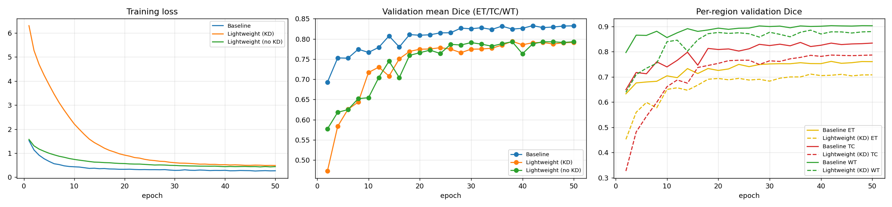
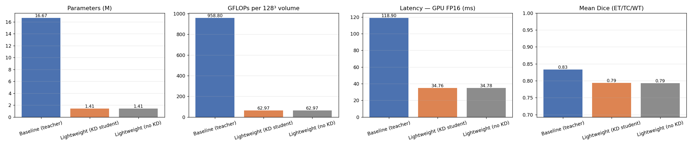
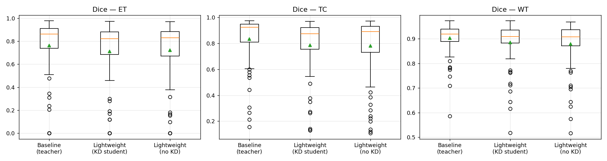
Run 3. Feature-level distillation and sigmoid region head
Setup. Same data and split; the baseline and student weights from Run 1 and 2 were loaded, so the teacher (0.833) and the logit-KD student (0.794) are the reference. Both new students keep the 1.41 M-parameter architecture and trained for 50 epochs, about 1 minute per epoch on a T4.
Feature-level distillation. Besides the labels, the student was trained to match the teacher's intermediate features. Best mean Dice was 0.788 at epoch 30 (ET 0.702, TC 0.786, WT 0.875); the last epoch gave 0.787. That is 0.006 below logit-level KD (0.794) and 0.005 below training from labels only (0.793): no gain, and slightly worse, a little more than the 0.003 run-to-run noise we measured in Run 2.
Sigmoid region head. Instead of one softmax over four classes, the student predicts the three nested regions (WT, TC, ET) with independent sigmoid outputs. At the last epoch it reached 0.785 (ET 0.694, TC 0.777, WT 0.884). Training was unstable at first: in this run ET and TC stayed near 0 for the first 10 epochs (TC exactly 0.000) and only started learning at epoch 12. A second run of the same head in another notebook learned steadily from epoch 2 and ended at 0.783 (ET 0.710, TC 0.766, WT 0.872), so the final result is about 0.784 in both.
What we think it means. Neither change beats the plain student (0.793 to 0.794). This agrees with Run 2: the small model is limited by its capacity, and extra supervision, whether from output probabilities, intermediate features or a different output head, does not move it. The region head's slow start also makes it harder to train for no benefit.
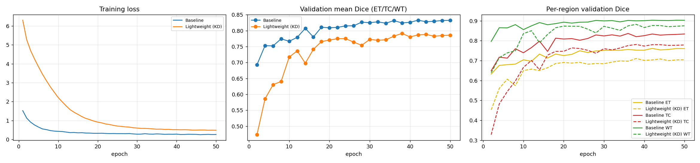
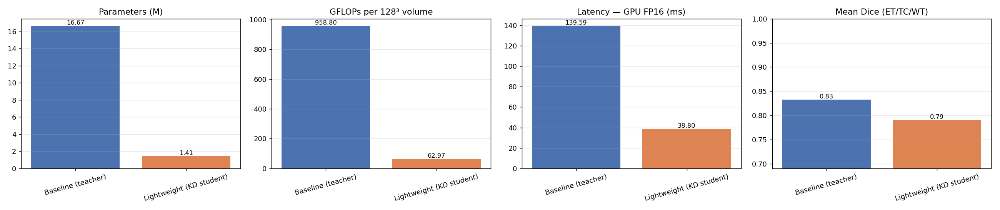
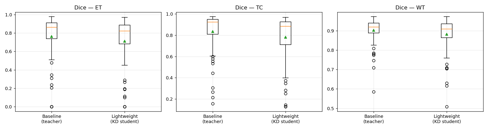
Run 4. Depthwise-separable student
Setup. Same data, split and 50 epochs. Replacing the standard 3D convolutions by depthwise-separable ones cuts the student to 0.41 M parameters: 3.4x fewer than the plain student (1.41 M) and 40.7x fewer than the baseline (16.67 M).
What we found. Best mean Dice was 0.773 at epoch 48 (ET 0.691, TC 0.766, WT 0.860); the last epoch gave 0.768. That is 0.021 below the plain 1.41 M student (0.794) and 0.060 below the baseline, in exchange for 3.4x fewer parameters. It learns more slowly than the plain student (0.680 at epoch 10 versus 0.717 for logit-KD) and ends lower, with whole tumor affected most (0.860 vs 0.885).
What we have not measured. FLOPs and latency of this model were not recorded, so we make no speed claim: fewer parameters does not guarantee faster inference, since 3D depthwise kernels can be slow on GPUs. The MC-dropout student was not trained in this run; it is Run 5.
Run 5. MC-dropout student
Setup. Same data, split and 50 epochs. This notebook retrained the baseline (0.833 mean Dice again: ET 0.761, TC 0.834, WT 0.903) and the distilled student (0.788: ET 0.706, TC 0.777, WT 0.881). It then trained a third student with the same 1.41 M-parameter architecture, dropout rate 0.1 and logit-level distillation, about 1 minute per epoch on a T4. MC-dropout keeps dropout switched on at test time and runs the model 10 times to get a spread of predictions.
What we found. Best mean Dice was 0.763 at epoch 24 (ET 0.659, TC 0.753, WT 0.877); the last epoch gave 0.759. That is 0.025 below the plain distilled student in the same run (0.788) and 0.070 below the baseline, with enhancing tumor affected most (0.659 versus 0.706). Validation Dice also moved more from epoch to epoch (0.763 at epoch 24, 0.739 at epoch 26, 0.735 at epoch 30). A single pass costs about the same as the plain student (39.4 ms versus 34.9 ms in the notebook's GPU FP16 benchmark, same architecture at test time), but an MC-dropout uncertainty map needs 10 passes. On the first validation case, 10 samples gave a mean entropy of 0.216 and a maximum per-voxel standard deviation of 0.419.
What we have not measured. We did not test whether the MC-dropout map finds the model's errors better than the teacher-student disagreement map (Figure 7); that comparison only covered flip-TTA and teacher-student maps. HD95 for this model was not recorded, and we tried only one dropout rate.
What we think it means. Dropout cost accuracy, which fits the earlier picture that this 1.4 M-parameter student is limited by capacity: removing units during training hurts, and the teacher's soft labels do not make up for it. It is one run, but the gap (0.025) is about four times the 0.006 spread of the plain student across runs (0.791, 0.794, 0.788), so it is probably real. A smaller dropout rate might lose less.
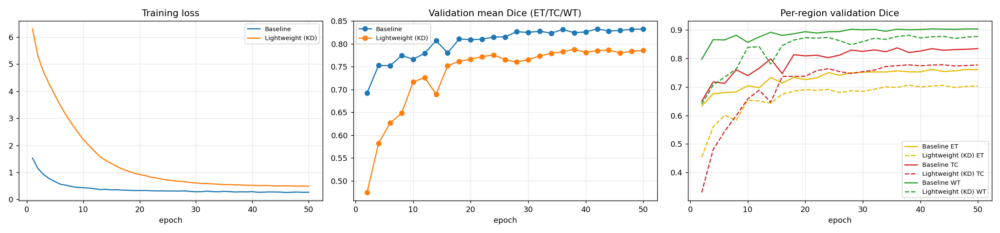
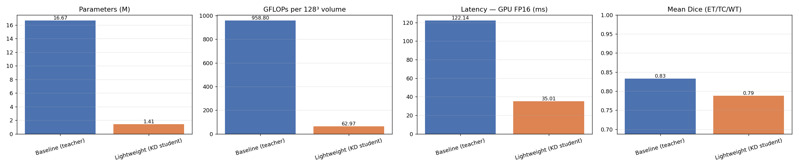
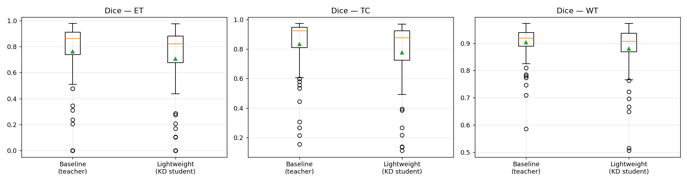
Qualitative results and planning tools
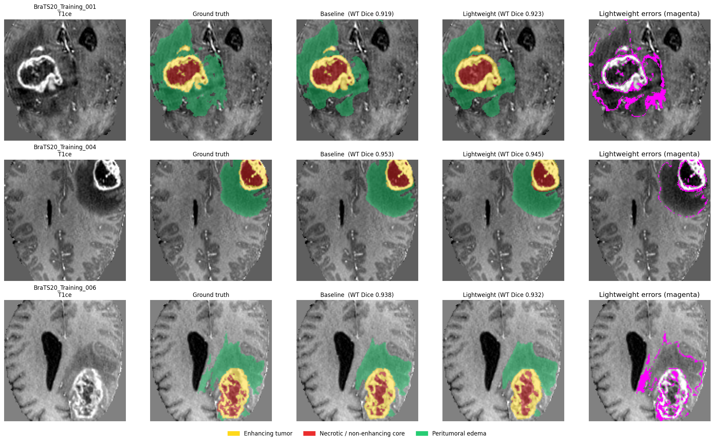
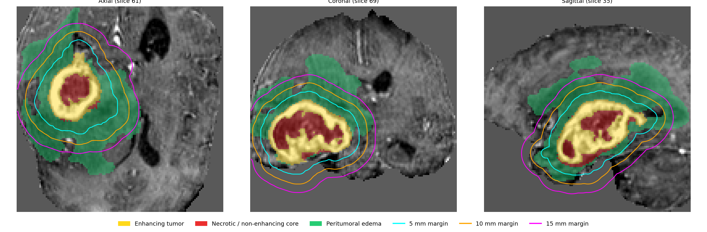
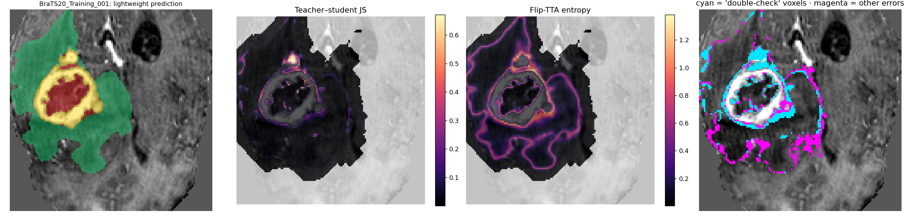
The surgical planning app
Load and compare
Pick a held-out case or upload four NIfTI scans. See the baseline, the lightweight model and ground truth side by side.
Plan
Tumor volumes, adjustable 0 to 20 mm safety margin, entry-point trajectory check, interactive 3D model.
Double-check
Teacher-student disagreement map highlights voxels worth a second look.
Run it: pip install -r requirements.txt then streamlit run app.py.
Honest limits
- One dataset, evaluated on a split of the training data. No external or clinical validation.
- Margins are geometric only. There is no map of eloquent cortex, white-matter tracts or vessels beyond an approximate atlas overlay (BraTS uses the SRI24 template, not MNI152).
- Distillation gave no measurable gain over training the same student from scratch (0.794 vs 0.793 mean Dice), and feature-level distillation (0.788) and a sigmoid region head (0.785) did not help either.
- Boundary error roughly doubles for the lightweight model on enhancing tumor and tumor core (HD95 4.1 to 8.7 mm and 5.7 to 10.2 mm).
- The depthwise-separable student (0.41 M parameters) costs about 0.02 mean Dice, and we have not measured whether it is actually faster. The MC-dropout student (dropout 0.1) lost about 0.025 mean Dice against the plain student in the same run (0.763 versus 0.788), and we did not test whether its uncertainty map finds errors better than the teacher-student disagreement map.
- Most configurations were trained once (two runs for the region head, three for the plain distilled student: 0.791, 0.794 and 0.788 mean Dice); differences below about 0.006 Dice should not be read as real.
- The novelty is applied: a measured size and speed study plus planning and uncertainty tools, not a new network architecture or a new training method.